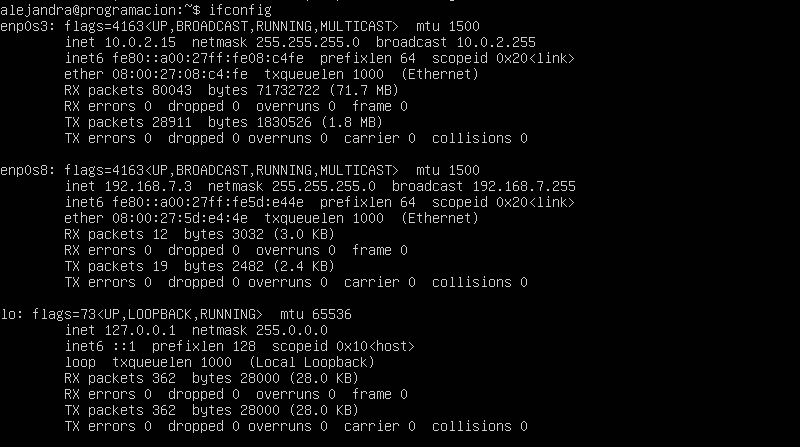
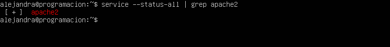

CONFIGURACIONES DE UBUNTU
- Introducción
- Configuraciones de red
- Descargas
- Clonación de un repositorio de GitHub
- Configuración de los servidores
- Configuración del VirtualHost
Introducción
En este tutorial les enseñaré a cómo configurar Ubuntu Server desde una máquina virtual.
Primeramente, ¿qué es Ubuntu Server? Es un Sistema Operativo sin entorno gráfico (aunque podemos instalarlo) lo que quiere decir que todaslas acciones se realizan mediante consola, y normalmente ni siquiera a través del propio servidor, sino desde una conexión remota. El manejo de Ubuntu Server es muy similar al de cualquier otro sistema Linux, pero con las particularidades de Ubuntu (como el sudo).
¿Qué habrá en este tutorial? En este tutorial se enseñará cómo hacer una serie de configuraciones en el servidor Ubuntu, como descargas, cambiar de carpetas, lo principal será como hacerle para desde la IP entrar a una aplicación desde el navegador de la computadora.
Configuraciones de red
Configurar la red nos ayudará a que cuando consultemos la IP en la máquina virtual nos la de y que podamos ver en el navegador lo que esperamos ver.
Para esto, lo primero que tenemos que hacer es entar a "Configuración".
Después entramos al apartado de "Red". 
Y por último tenemos que hacer cambios en el segundo adaptador como los que se muestran en la imagen.
Descargas
Lo primero que tenemos hacer es poner el siguiente comando en la máquina virtual "sudo apt update" NOTA: PARA TODAS LAS DESCARGAS ES IMPORTANTE QUE ESTÉ CONECTADO A UNA RED WIFI. Nos pedirá la contraseña y después iniciará la descarga. Esta es para que actualice la lista de paquetes disponibles y sus versiones, pero no instala ni actualiza ningún paquete.
La segunda descraga es muy parecida a la primera pero esta en vez de actualizar la lista, esta si actualiza los paquetes y el comando es "sudo apt upgrade".
Ya que tengamos los paqueteas actualizados, vamos a descargar PHP, MySQL Server, Apache y PHP-MySQL, para esto pondremos el siguiente comando en la máquina "sudo apt install php mysql-server apache2 php-mysql" cada uno se puede poner por separado, pero para que sea más rápido lo haremos todo junto. Nos debe de quedar como en la siguiente imagen.
Lo siguiente no es una descarga, pero tenemos que hacerlo para ver si la configuración de la red funciona, pondremos el comando "if config" y nos aparecerá lo siguiente.

Lo siguiente que tenemos que hacer es identificar la IP que esta en "enp0s8" que es la red que configuramos previamente y tenemos que ponerla en nuestro navegador de preferencia, en mi caso la IP que me dió es "192.168.7.3".
Y lo que nos tiene que aparecer es lo siguiente.
Clonación de un repositorio de GitHub
Antes de clonar el repositorio de GitHub, tenemos que tener activos los servicios de Apache y MySQL, para eso pondremos los siguientes comandos: "sudo service apache2 start" y "sudo service mysql start", nos quedará de la suguiente manera
Luego verificaremos que Apache si esté funcionando para eso pondremos el siguiente comando: "service --status-all | grep apache2", la tecla "|" se encuentra abajo del "esc" y nos tiene que aparecer lo siguiente.

Ahora ya podemos empezar con la clonación del repositorio, lo que incluye este repositorio es una base de datos de una biblioteca, un código en php y html para la creación de un usuario y la conexión a la base de datos, para esto pondremos el siguinete comando "sudo git clone https://github.com/dgeti-cetis108/Programacion-M4S2-2018.git", nos aparecerá esto.
Después para que la carpeta no tenga un nombre algo complejo de buscar, vamos a cambiarle de nombre a "library.com" con el siguiente comando: "sudo mv Programacion-M4S2-2018/ library.com" NOTA: LOS ESPACIOS SE DEBEN DE RESPETAR PORQUE SI NO ES ASÍ NOS SALDRÁ ERROR.
Por último vamos a cambiar la carpeta de posición, con el comando "sudo mv library.com /var/www/html".
Configuración de los servidores
Ahora vamos a configurar los servidores, lo primero que haremos es movernos a la carpeta "bd" que se enuentra dentro de "library", pondremos el siguiente comando: "cd library.com/db", lo que se encuentra dentro de ésta carpeta es la base de datos
Lo segundo que haremos es ver el contenido de la base de datos, para eso pondremos este comando: "cat library.sql".
Luego nos moveremos al servicio MySQL, para eso pondremos el comando "sudo -i".
Ahora ya no seremos nuestro nombre de usuario, seremos "root".
Aún no hemos entrado bien a MySQL, solo nos falta poner el comando "mysql".
Lo siguiente que haremos será crear un usuario, para eso pondremos el siguiente comando "create user 'alejandra'@'localhost' identified by 'cetis';" el nombre de usuario y la contraseña varia en como le queramos poner. NOTA: EL "@localhost" SI VA INCLUIDO COMO COMANDO, LO UNICO QUE SE PUEDE CONFIGURAR ES "alejandra" Y "cetis".
El siguiente comando lo pondremos para darle privilegios al usuario, que serán todos los posibles, el comando es: "grant all on library.* to 'alejandra'@'localhost';", el ".*" significa que son todos los privilegios. Nos saldremos de MySQL con el comando "exit". Y después volveremos a escribir "exit", para volver a donde estabamos desde el principio.
Ahora probaremos la conexión del usuario con el comando "mysql -u alejandra -p".
Ahora nos moveremos a la carpeta "classes" con el comando "cd library.com/classes".
Después ya no seremos "alejandra@programacion:~$" sino que se le añadirá el "/library.com/classes$" que nos indica que ya estamos en la carpeta classes, entraremos a ver que hay en "conexion.php" con el comando "sudo nano conexion.php".
Nos aparecerá lo siguiente:
Lo último que haremos sera cambiar el "username" y "password" por los valores que pusimos cuando creamos el usuario, en mi caso son "alejandra" y "cetis". Para guardar los cambios pulsaremos las teclas "ctrl" + "o", luego dar enter y por último para salir es "ctrl" + "x". Nos tiene que quedar así:
Configuración del VirtualHost
Lo primero que tenemos que hacer es configurar el virtual host de nuestra máquina, para eso primero le vamos a dar permisos de administrador a Bloc de notas, buscamos bloc de notas y clic derecho "Ejecutar como administrador".
Ahora vamos a buscar el archivo host que está en.
Después vamos a seleccionar el archivo host.
Nos aparecerá lo siguiente.
Ahora vamos a poner la IP que nos dio la máquina y el nombre de la carpeta, en mi caso la IP es "192.168.7.3" y el nombre de la carpeta es "library.com".
Ya que hayamos configurado el Virtual Host de nuestra máquina, solo nos queda configurar el de la máquina virtual, para eso lo primero que haremos es cambiarnos a la carpeta "sites-available", con el comando "cd /etc/apache2/sites-available".
Nos aparecerá algo así:
Ahora configuraremos el archivo "library.com.conf" con el comando "sudo nano library.com.conf"
Ya que estemos dentro del archivo, primero estará en blanco, NOTA: EL CORREO ELECTONICO PUEDE VARIAR DEPENDIENDO DE CUAL SEA EL TUYO, el código que le agregaremos es el siguiente:
Para guardar el archivo tener que seleccionar las teclas "ctr" + "o", dar enter y para salir es "ctrl" + "x".
Ahora vamos a reiniciar Apache con el comando "sudo service apache2 restart".
Si está bien nos tiene que salir lo siguiente:
Ya que hayamos configurado el archivo "library.com.conf", tenemos que configurar el archivo "host", para eso tenemos que poner el comando "sudo nando /etc/host".
Igual que en el otro archivo nos aparecerá en blanco y nosotros le pondremos lo siguiente:
Guardamos con "ctrl" + "o", después la tecla "Enter" y salimos con "ctrl" + "x".
Ya por último vamos a nuestro navegador y escribimos "library.com", nos deberá aparecer lo siguiente:
Y listo, eso es todo, gracias por su atención.